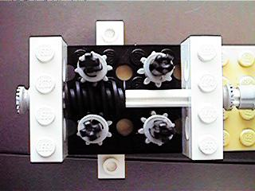
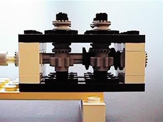

To the left is the Technic motor that drives the input. The four shafts
coming out of the top are the output.

Here it is with the hood off... the input is on the right. The worm
gear is the magic... it slides left or right depending on the direction
of the motor, and engages only one pair of output shafts. The driven pair
turn opposite directions, so you can tap off what ever one is going the
way you need. Either shaft of a given pair can be removed if not used.
Below are a series of shots that show the worm gear driving the left pair of outputs, then sliding over to the right to drive that pair:

Here it is with half of the "hood" back on.
One last shot to show the assembly... nothing fancy... (but trust me,
it was hard to get it this elegant... the first models were at least four
times larger). Have fun!
(photos taken with the Casio QV-11 Digital Camera)
E-Mail Comments: rci@sonic.net